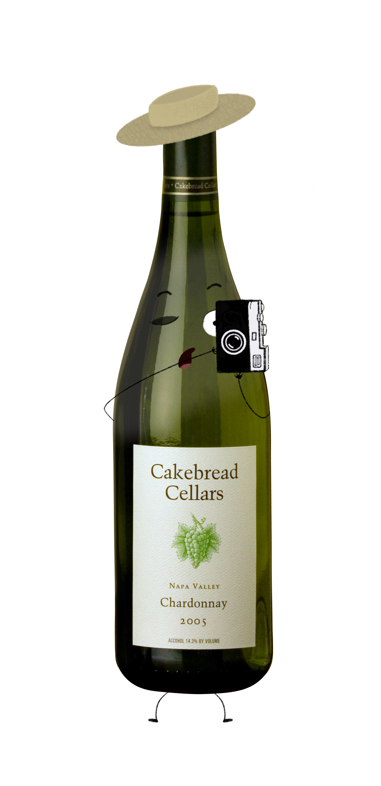
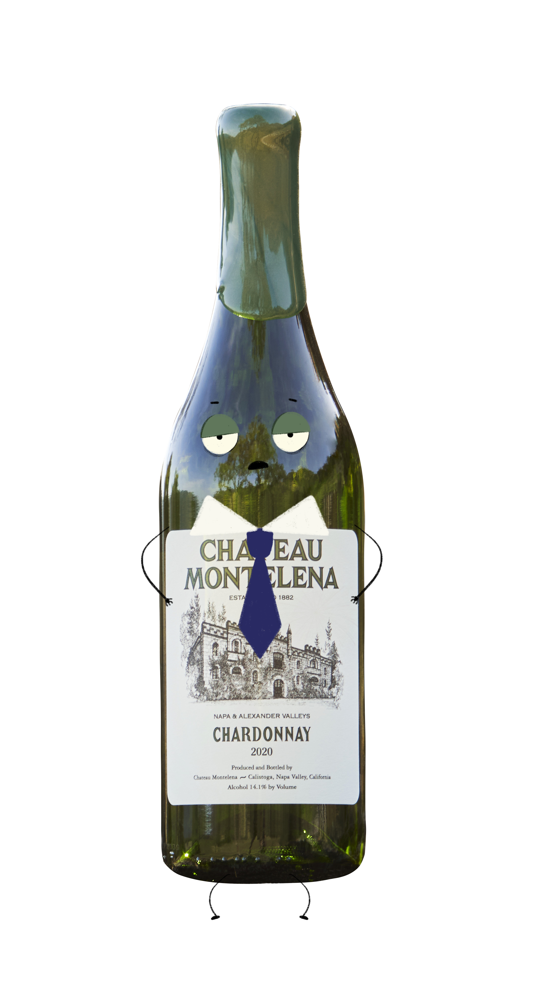

🙂 overview
I was offered the opportunity to work on the hero image for a story about Napa Valley's Class of 1972 wineries. Alex had been throwing around the idea of creating anthropomorphized wine bottle illustrations paired with "Most likely to..." superlatives like those from school yearbooks.
🙂 process
Frankly, I was quite nervous to get started on illustrations because I didn't have much experience in the area and have mostly worked on simple vector illustrations on Adobe Illustrator. I knew I wanted to challenge myself and work on a new skillset, so I was very grateful for the flexibility Alex provided me with this project.
I started with looking at inspiration to decide on an art style; Alex had already shown me a few images that inspired his idea to begin with, but I wanted to see a range of illustrations done by differing artists. While doing so, I knew the story would need a composite image of all 12 of the wine bottles the story mentioned, so I also worked on creating cut outs and editing the wine bottles together on Photoshop.
Once I received the story draft, I looked for parts of the writing that gave characteristics and personality to the wineries. For example, Cakebread Cellars was founded by a photographer, hence the cartoon illustration received a camera and hat that was heavily inspired by the archival photos we received. After creating the artwork in Procreate, I edited the illustrations to give them a 70s-like feel and laid them out as if they were actually in a yearbook.



🙂 outcome
If I'm going to be honest, I felt way in out of my head with these illustrations, despite them being quite simple and silly illustrations. It definitely made me realize how much I needed to work on illustration as a skill, and since then, I've being work on Procreate on my own time to feel more confident and comfortable with creating illustrations on a shorter timeline. Nonetheless, the reporter and editors really enjoyed the artwork I created, so I was happy with my work and definitely felt encouraged and supported the entire time.